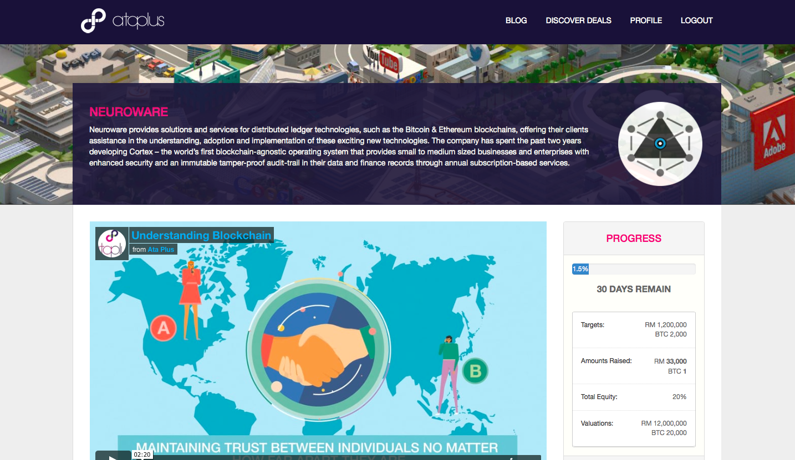
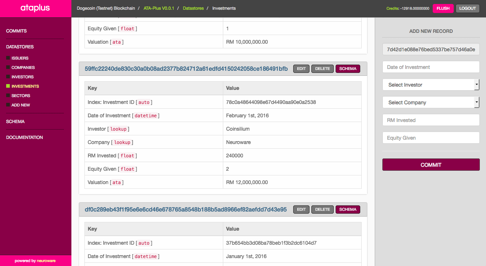

October 18th - 2016
We’d like to introduce you to ATA-Plus.
They’re one of six licensed ECF (equity crowdfunding) operators governed by the Securities Commission of Malaysia. With Neuroware’s help, they have just launched the world’s first fully-regulated blockchain-enhanced ECF platform. ATA-Plus uses Cortex, our blockchain-powered operating-system to store structured immutable records of issuers, deals and investments to further democratize the ownership of information whilst also ensuring the broadest possible inclusion and transparency.
Since ATA-Plus is also utilizing our keyless multi-signature technology to provide secure escrow services for direct Bitcoin investments, we wanted to be the first issuers on their platform to benefit from the solutions we have developed for them. This is why we've listed our parent company (R1 DOT MY) on ATA-Plus - in an effort to transparently raise funds to help us continue growing our business. Our public listing is the world’s first regulated equity crowdfunding campaign to accept direct Bitcoin investments.

The support, interest and understanding surrounding the potential impact of distributed ledgers has reached practically every level of the Malaysian government - from MDEC and the Ministry of Finance, who recently awarded R1 with MSC status, through to the boardrooms of the leading businesses and institutions throughout Asia. Numerous private and public consortiums, projects and research experiments are already underway behind closed doors that are seeking certainty and reassurance in favour of headlines without substance.
We need your help. In order to take our business to the next level, we are going to need the support of the crowd. Not just from a financial perspective, but much more importantly - we need you to start demanding more from the organizations that you trust with your most vital data. By utilizing Cortex, these systems could be storing that information within a database immune to viruses, which has an inescapable audit trail of every alteration ever made and can never be lost, hacked or stolen.

If you would like to help us and our mission, please visit ATA-Plus. If you already understand the impact blockchains will have upon society, we would appreciate your direct support. Otherwise, please take the time to learn more about the underlying technology that we are promoting, or reach out to us so we can take the time to explain the importance of distributed ledgers.